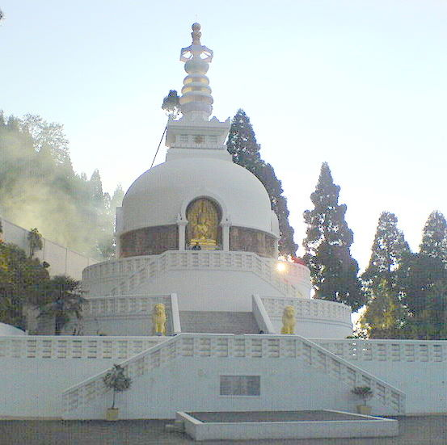

Peace Pagoda
A tranquil and beautiful Buddhist monument designed to provide a focus for people of all races to unite in peace.
💡 Provides an outstanding view of the Darjeeling landscape including Kanchenjunga.
Consecrated in 1992, the pagoda showcases four avatars of Buddha depicted in gold polish.